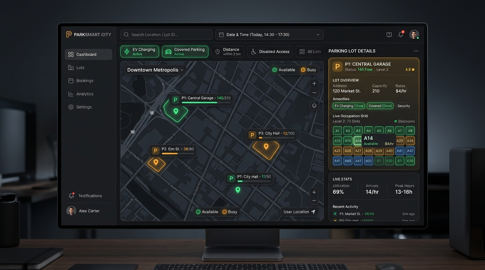
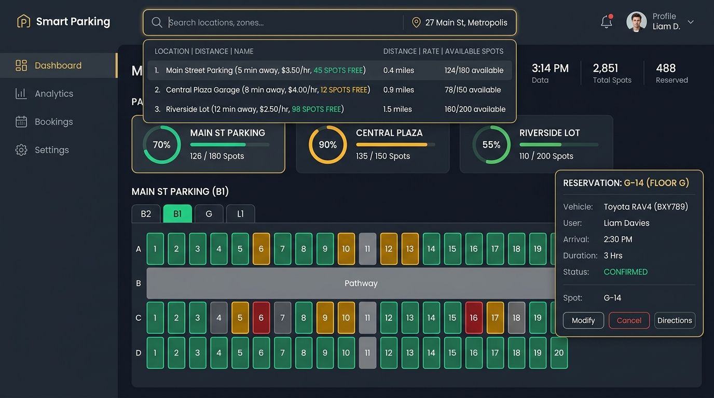
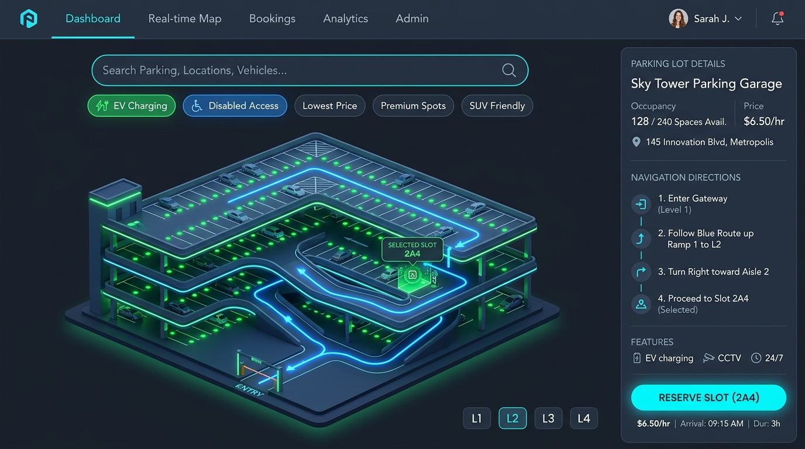

Smart Parking User Dashboard — UI/UX Redesign Concepts
Generated visual mockups exploring intelligent search, interactive geospatial maps, and predictive capacity.
Concept 1: Split Geospatial Interactive Map & Search Command Bar
Combines a top search bar with quick filter pills (EV Charging, Covered Parking, Distance) and a split screen: interactive dark map with real-time slot pins on the left, and live lot overview with slot grid on the right.

Concept 2: Smart Predictive Search & Circular Capacity Matrix (Recommended)
Features an intelligent floating search bar with instant autocomplete dropdown showing proximity, pricing, and available bays. Each lot card uses circular radial percentage rings, coupled with an interactive multi-floor parking bay grid.

Concept 3: 3D Isometric Multi-Deck Navigator & Route Guidance
Features an architectural 3D isometric deck view of multi-level garages with real-time green sensor occupancy and animated neon route guidance lines leading from the entry gate directly to the selected parking bay.
